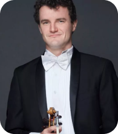

July
18
Tue 7:30 pm ⸺ Orpheum, Vancouver
July
19
Wed 7:30 pm ⸺ Orpheum, Vancouver
Program 
Experience Disney and Pixar's Academy Award-winning film Ratatouille™ on the big screen while the VSO performs composer Michael Giacchinos beloved score live.
Audiences of all ages love this tale of a determined young rat with a cultivated palate who gets an unlikely chance to do what he dreams of most - cook in a French restaurant in Paris.
Length
130 minutes
1 intermission

| 01. Le Festin | 06. Wall Rat | 11. A New Deal |
| 02. Welcome to Gusteau's | 07. Cast of Cooks | 12. Remy Drives a Linguini |
| 03. This is Me | 08. A Real Gourmet Kitchen | 13. Colette Shows Him Le Ropes |
| 04. Granny Get Your Gun | 09. Souped Up | |
| 05. 100 Rat Dash | 10. Is It Soup Yet? |
| 01. Le Festin |
| 02. Welcome to Gusteau's |
| 03. This is Me |
| 04. Granny Get Your Gun |
| 05. 100 Rat Dash |
| 06. Wall Rat |
| 07. Cast of Cooks |
| 08. A Real Gourmet Kitchen |
| 09. Souped Up |
| 10. Is It Soup Yet? |
| 11. A New Deal |
| 12. Remy Drives a Linguini |
| 13. Colette Shows Him Le Ropes |
Orchestra
Otto Tausk
Music Director
David Bui
RBC Assistant Conductor

Nicholas Wright
First Violin

Timothy Steeves
First Violin
David Lakirovich
First Violin
Jennie Press
First Violin
Jae-Won Bang
First Violin

Rebecca Whitling
First Violin
Yi Zhou
First Violin

Xue Feng Wei
First Violin
Cassandra Bequary
First Violin

Christie Reside
Flute

Dakota Martin
Flute

Karin Walsh
Oboe

Jeanette Jonquil
Clarinet
Michelle Goddard
Clarinet
Rosanne Wieringa
Flute

Aiden Wong
Bass Clarinet

Julia Mockhart
Bassoon

Sophie Dansearu
Contrabassoon
Oliver De Clercq
French Horn

Andrew Mee
French Horn

Holly Bryan
French Horn
William Loveless
French Horn
Larry Knopp
Trumpet

Vincent Vohradsky
Trumpet

Marcus Goddard
Trumpet

Brian Wendel
Trombone
Andrew Poirier
Trombone

Vern Griffiths
Percussion
Michael Jarrett
Percussion